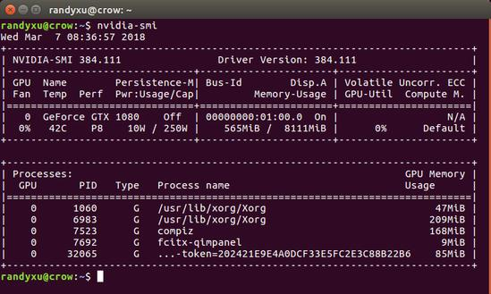

Assign idle GPU device to tensorflow script automatically
2018-03-23
本文章主要是針對在多GPU的機器上，有多個不同的Tensorflow任務或實驗要進行時，該如何讓機器進行GPU資源的分配，本文章大致上分成三個部分與大家做分享，分別為：
- Tensorflow GPU 配置設定的說明
- Nvidia smi 指令說明
- 自動指派閒置的 GPU 給新的 TensorFlow 任務
在 Tensorflow GPU 配置設定說明的部份，我們會以 Tensorflow 官方網站[1]的內容為主；Nvidia smi 指令說明則以Nvidia 官方[2]對於 nvidia-smi 的使用詳加說明；最後一個部份我們會分享我們如何利用上述兩個部份，來達到 GPU 資源的自動分配。無論哪個部分有問題都歡迎各位用力鞭策，以便小弟更深入的學習與修正，如果對於前兩個部分已經相當熟悉的讀者，建議可以直接閱讀第三部分。
Tensorflow using GPU [1]
TensorFlow 支援 CPU 和 GPU 來進行運算，針對這兩種設備 TensorFlow 以字串的方式來呈現，如下方所示；同時擁有 CPU 和 GPU 時，Tensorflow 會優先將 operation 指派給GPU來做運算。
- “/cpu:0”：機器的 CPU。
- “/device:GPU:0”：機器的第一個 GPU。
- “/device:GPU:1”：機器的第二個 GPU，依此類推。
Manual device placement (手動配置設備)
如果我們要讓特定的運算配置於指定的設備，我們可以使用 with tf.device 建力設備環境，在這個環境底下的運算皆會以環境指定的設備來運行。
# 建立一個 graph.
with tf.device('/cpu:0'):
a = tf.constant([1.0, 2.0, 3.0, 4.0, 5.0, 6.0], shape=[2, 3], name='a')
b = tf.constant([1.0, 2.0, 3.0, 4.0, 5.0, 6.0], shape=[3, 2], name='b')
c = tf.matmul(a, b)
# 建立 session 伴隨 log_device_placement 並設定為 True.
sess = tf.Session(config=tf.ConfigProto(log_device_placement=True))
# 運行這個 op.
print(sess.run(c))a 和 b 皆被分配至 cpu:0 進行運算；而 c 沒有被指定設備，TensorFlow 運行時會自動配置 GPU:0 執行該運算。
Device mapping:
/job:localhost/replica:0/task:0/device:GPU:0 -> device: 0, name: Tesla K40c, pci bus
id: 0000:05:00.0
b: /job:localhost/replica:0/task:0/cpu:0
a: /job:localhost/replica:0/task:0/cpu:0
MatMul: /job:localhost/replica:0/task:0/device:GPU:0
[[ 22. 28.]
[ 49. 64.]]Allowing GPU memory growth
TensorFlow 預設會占用所有 GPU 的記憶體資源(取決於 CUDA_VISIBLE_DEVICES 這個系統變量)。這樣個做法可以減少記憶體破碎(memory fragmentation)的問題，更有效地利用 GPU 記憶體資源。但在某些情況下，處理程序僅需配置部分的記憶體，或者是根據處理程序的需求來增加記憶體的使用量。Tensorflow 在 Session 上提供了兩個 Config 參數選項來進行控制。
「allow_growth」選項，基於運行時配置的GPU記憶體分配更多的 GPU 記憶體：剛開始，此設定會使程序所分配的記憶體非常小，但隨著 Session 的運行和更多的GPU記憶體需求，擴展 TensorFlow 所需要的 GPU 記憶體區域。此設定並不會釋放記憶體，所以會導致較糟糕的記憶體碎片。要開啟此選項，請在 ConfigProto 中設定為：
config = tf.ConfigProto()
config.gpu_options.allow_growth = True
session = tf.Session(config=config, ...)Using a single GPU on a multi-GPU system
當我們的系統中有多個 GPU 時，TensorFlow 預設會選擇低 ID 的 GPU；如果我們想在其他 GPU 上運行，可以透過 with tf.device 來做指派：
# 建立一個 graph.
with tf.device('/gpu:2'):
a = tf.constant([1.0, 2.0, 3.0, 4.0, 5.0, 6.0], shape=[2, 3], name='a')
b = tf.constant([1.0, 2.0, 3.0, 4.0, 5.0, 6.0], shape=[3, 2], name='b')
c = tf.matmul(a, b)
# 建立 session 伴隨 log_device_placement 並設定為 True.
sess = tf.Session(config=tf.ConfigProto(log_device_placement=True))
# 運行這個 op.
print(sess.run(c))如果我們指派的設備不存在，我們會得到 InvalidArgumentError:
InvalidArgumentError: Invalid argument: Cannot assign a device to node 'b':
Could not satisfy explicit device specification '/device:GPU:2'
[[Node: b = Const[dtype=DT_FLOAT, value=Tensor<type: float shape: [3,2] values: 1 2 3...>, _device="/device:GPU:2"]()]]如果我們想避免我們所指派的設備不存在時，讓 TensorFlow 自動幫我們選擇一個存在且可以支援的設備運行操作，可以透過在建立 Session 時，在 Config 的參數設定中加入 allow_soft_placement = True。
# 建立一個 graph.
with tf.device('/gpu:2'):
a = tf.constant([1.0, 2.0, 3.0, 4.0, 5.0, 6.0], shape=[2, 3], name='a')
b = tf.constant([1.0, 2.0, 3.0, 4.0, 5.0, 6.0], shape=[3, 2], name='b')
c = tf.matmul(a, b)
# 建立 session 伴隨allow_soft_placement、log_device_placement 並設定為 True.
Creates a session with allow_soft_placement and log_device_placement set
# to True.
sess = tf.Session(config=tf.ConfigProto(
allow_soft_placement=True, log_device_placement=True))
# 運行這個 op.
print(sess.run(c))Using multiple GPUs
如果我們想在多塊 GPU 上運行 TensorFlow，我們可以利用 multi towers 模式建構我們的模型，例如：
# 建立一個 graph.
c = []
for d in ['/gpu:2', '/gpu:3']:
with tf.device(d):
a = tf.constant([1.0, 2.0, 3.0, 4.0, 5.0, 6.0], shape=[2, 3])
b = tf.constant([1.0, 2.0, 3.0, 4.0, 5.0, 6.0], shape=[3, 2])
c.append(tf.matmul(a, b))
with tf.device('/cpu:0'):
sum = tf.add_n(c)
# 建立 session 伴隨 log_device_placement 並設定為 True.
sess = tf.Session(config=tf.ConfigProto(log_device_placement=True))
# 運行這個 op.
print(sess.run(sum))輸出結果：
Device mapping:
/job:localhost/replica:0/task:0/gpu:0 -> device: 0, name: Tesla K20m, pci bus
id: 0000:02:00.0
/job:localhost/replica:0/task:0/gpu:1 -> device: 1, name: Tesla K20m, pci bus
id: 0000:03:00.0
/job:localhost/replica:0/task:0/gpu:2 -> device: 2, name: Tesla K20m, pci bus
id: 0000:83:00.0
/job:localhost/replica:0/task:0/gpu:3 -> device: 3, name: Tesla K20m, pci bus
id: 0000:84:00.0
Const_3: /job:localhost/replica:0/task:0/gpu:3
Const_2: /job:localhost/replica:0/task:0/gpu:3
MatMul_1: /job:localhost/replica:0/task:0/gpu:3
Const_1: /job:localhost/replica:0/task:0/gpu:2
Const: /job:localhost/replica:0/task:0/gpu:2
MatMul: /job:localhost/replica:0/task:0/gpu:2
AddN: /job:localhost/replica:0/task:0/cpu:0
[[ 44. 56.]
[ 98. 128.]])Useful nvidia-smi Queries [2]
在電腦安裝 cuda 之後，便可以使用 Nvidia 所提供的 nvidia-smi 指令來查詢目前所有 GPU 的使用狀況，如下圖1所示，這邊我們也藉著這個機會把GPU使用表中各個內容的涵義複習一下[3]。
- Fan：N/A是風扇轉速，從0~100%之間變動。
- Temp：攝氏溫度。
- Perf：效能狀態，P0~P12，P0表示最大效能，P12表示最小效能。
- Pwr：耗能。
- Persistence-M：持續模式狀態，持續模式耗能較大，但在啟動時間花費較少，此處顯示的是off狀態。
- Bus-Id：PCI bus id 以16進制呈現 "domain:bus:device.function”。
- Disp.A：Display Active，表示 GPU 的顯卡是否初始化。
- Memory Usage：GPU 記憶體的使用情況。
- Volatile GPU-Util：浮動的 GPU 利用率。
底下我們則對於nvidia-smi其他詳細的查詢參數簡單說明：
$ nvidia-smi --query-gpu=timestamp,name,pci.bus_id,driver_version,pstate,temperature.gpu,utilization.gpu,utilization.memory, memory.total,memory.free,memory.used --format=csvtimestamp, name, pci.bus_id, driver_version, pstate, temperature.gpu, utilization.gpu, utilization.memory, memory.total, memory.free, memory.used
2018/03/07 08:40:54.080, GeForce GTX 1080, 00000000:01:00.0, 384.111, P8, 44, 0 %, 2 %Query Description
- timestamp：時間戳記，查詢格式為 "YYYY/MM/DD HH:MM:SS.msec.”。
- name：GPU 的官方產品名稱。
- pci.bus_id：PCI bus id 以16進制呈現 "domain:bus:device.function”。
- pstate：GPU 目前的效能狀態，P0~P12，P0 表示最大效能，P12 表示最小效能。
- temperature.gpu：GPU 的攝氏溫度。
- utilization.gpu：過去在 GPU 上執行一個或多個內核的採樣週期之時間百分比。
- utilization.memory：過去在讀取或寫入全域（設備）記憶體的採樣週期之時間百分比。
- memory.total：所有安裝的 GPU 記憶體總和。
- memory.free：閒置記憶體的總和。
- memory.used：目前配置使用中的記憶體總和。
Single GPU auto assign script for tensorflow
一台 GPU server同常會有很多使用者使用，但 GPU 記憶體資源卻是有限的，以我個人目前所接收到的資訊，TensorFlow 和 NVIDIA 並沒有提供相關多個 GPU 資源排程與自動分配的解決方案，所以如何自動化有效地管理多個 GPU 記憶體資源的議題，個人覺得是個非常值得去解決的問題，但我這邊提出一個比較粗糙的方法來解決此問題，本方法在 GPU 資源完全分配完後，並無法提供排程等待功能，使用者需要自行等待 GPU 資源被其他程序釋放後，才可以在透過執行此腳本來獲取 GPU 資源。
為了達到讓新的 TensorFlow 程序自動配置系統中閒置的 GPU，我們必須先得知哪些 GPU 是處於閒置的狀態，而透過上述的 nvidia-smi Queries 指令，便可以讓我們獲得此資訊；得知哪些 GPU 是處於閒置的狀態後，使用 TensorFlow 的 tf.with_device 來配置 GPU 資源，如下方程式碼所示。
#Gpu_assignScript_auto.py
import tensorflow as tf
#Import your train class or functions here.
import module as training
import subprocess
import tempfile
def utilgpu():
cmd = "nvidia-smi --query-gpu=utilization.gpu --format=csv"
num_params = 1
gpu_info = dict() # File cursor from begining
with tempfile.TemporaryFile() as tempf:
proc = subprocess.Popen(cmd, shell=True, stdout=tempf)
proc.wait()
tempf.seek(0) # File cursor from begining
rows = tempf.read().splitlines()
for i, row in enumerate(rows):
if i != 0:
if rows[0] in gpu_info:
gpu_info[rows[0]].append(row.split(" ")[0])
else:
gpu_info[rows[0]] = [row.split(" ")[0]]
return gpu_info
def gpu_assign():
gpu_util = utilgpu()
for util in gpu_util:
for value in gpu_util[util]:
if int(value) == 0:
return gpu_util[util].index(value)
return None
def main(gpu_id):
device = '/device:GPU:' + str(gpu_id)
print("The gpu assigned of your script is: %s" % device)
config = tf.ConfigProto()
# Tensorflow automatically choose an existing device
config.allow_soft_placement = True
# Extend the GPU memory
config.gpu_options.allow_growth = True
# Show the device placement log
config.log_device_placement = True
sess = tf.InteractiveSession(config=config)
with tf.device(device):
"""Call your train script here, must with the sess as arg."""
training.run(sess)
if __name__ == '__main__':
gpu_id = gpu_assign()
if gpu_id is not None:
main(gpu_id)
else:
print("All of gpus on server are busy!")
最後，使用底下的指令來執行我們的 TensorFlow 程序。
$ python Gpu_assignScript_auto.pyReference
[1] https://www.tensorflow.org/programmers_guide/using_gpu
[2] http://nvidia.custhelp.com/app/answers/detail/a_id/3751/~/useful-nvidia-smi-queries
[3] http://blog.csdn.net/bruce_0712/article/details/63683787